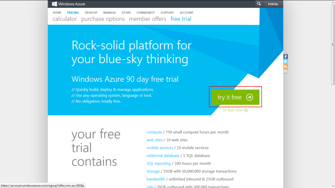
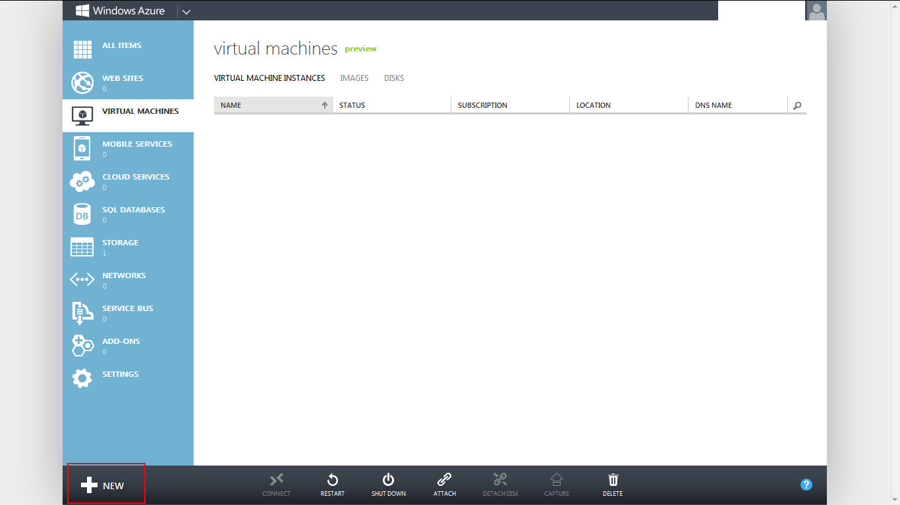
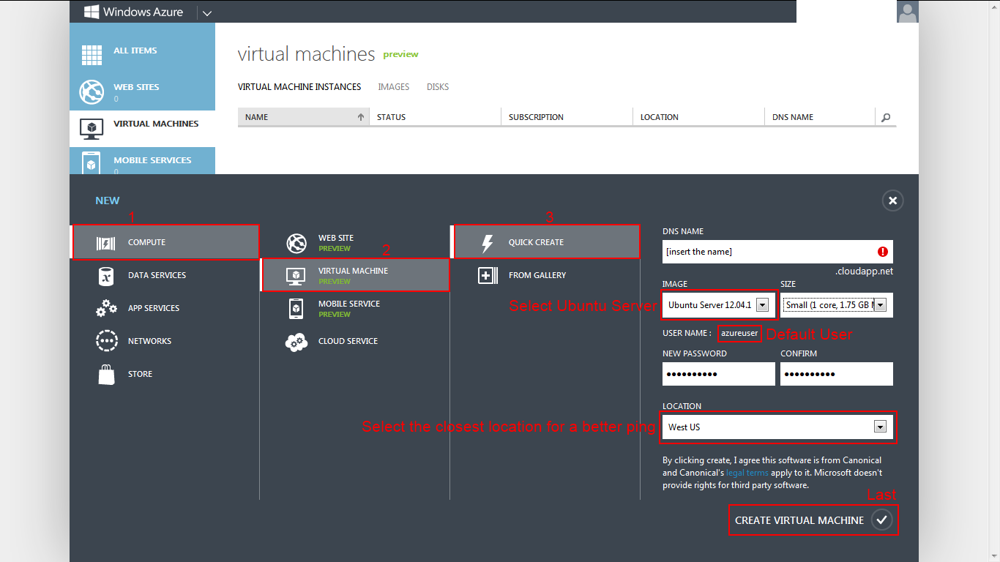
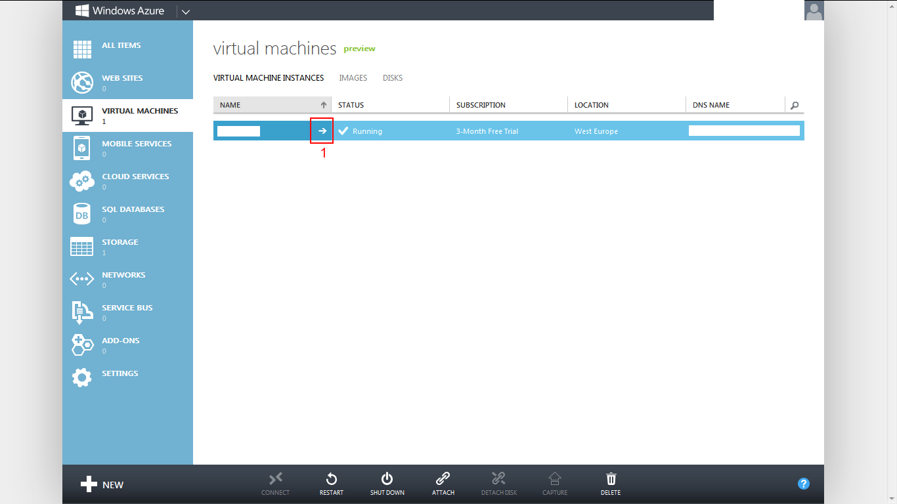
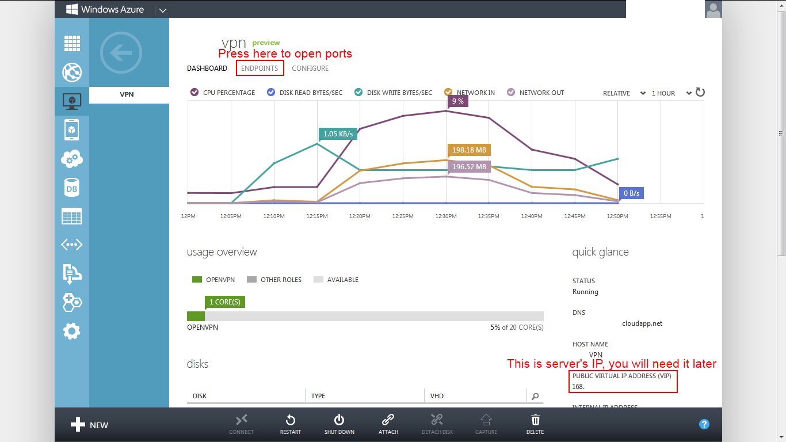
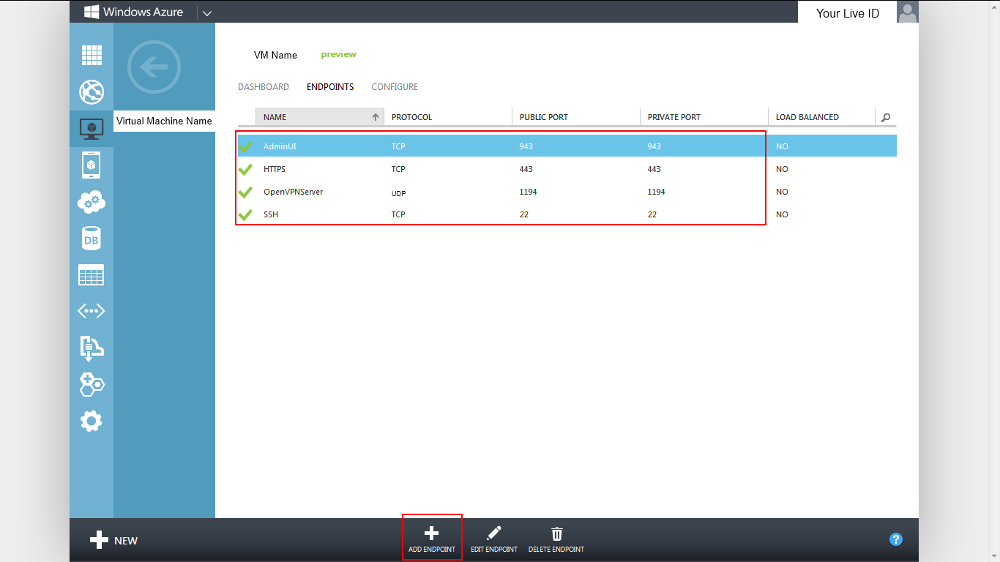
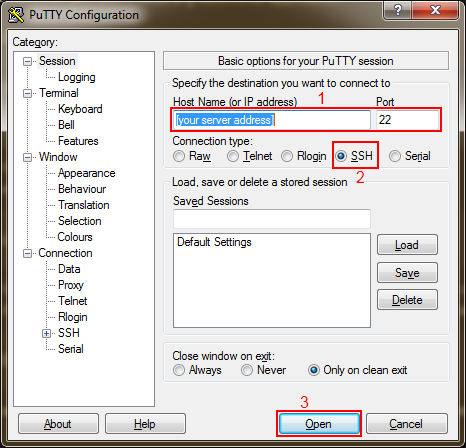
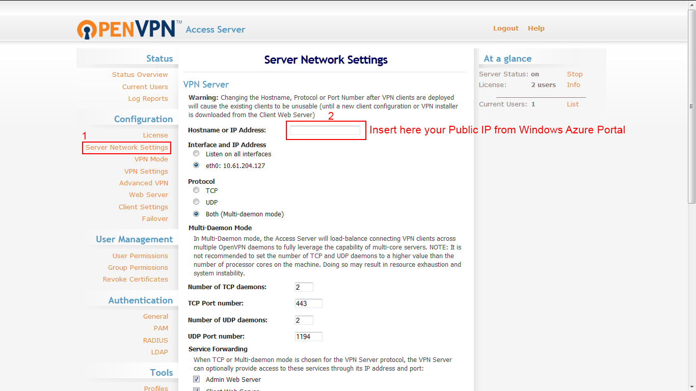

Thanks to GitHub for hosting this site and thanks to mattgraham for this beautiful theme.
While Windows Azure is often buggy/problematic and has a little bit less features I still prefer it over Amazon EC2 because the Free Trial/Free Tier of Windows Azure guarantees that you will not waste/pay a penny unless you manually diactivate the 200$/month limit(you get free 200$ for 1 month) or use the SQL Database created by the "Mobile Services" after the 30 days free trial expired(From Windows Azure pricing details: "The SQL Database utilized by Mobile Services, however, will be charged at Pay-As-You-Go rates at the end of the 30-day free trial.").
On Windows Azure if you reach the monthly limit offered by the Free Trial than the service is just paused for this month while on Amazon EC2 if you reach the monthly limit offered by the Free Tier than "you simply pay standard, pay-as-you-go service rates" and the service is still offered, it will not be stopped.
1. This is a link - you can click it and it will open in a new tab. Also, the images are clickable. If you click on them you will see them in full size.
2. You need a credit card which will be used to register for the service offered by Microsoft called Windows Azure. If you want to register for the 1 Month trial you need to make sure the credit card has at least some money on it(They will not take any but with an empty credit card it won't work). If you don't use the "Mobile Services"(and we won't) than you will never be charged when you use the Free Trial unless you manually remove the 200$/month limit(which you get for free) on your account.
3. You need a mobile phone number, also used for the same registration(Microsoft Windows Azure).
4. You need a Microsoft Live account. If you don't have one, than go Sign Up for one
1. Go to Windows Azure Free Trial page and press on the "try it free" button.
2. Next you will be asked to log-in with your Microsoft Live account. Complete the registration.
1. Make sure you are logged in into the Portal. If you are not, than Log In.
2. Press "New" -> "Compute" -> "Virtual Machine" -> "Quick Create". Fill out the spaces.
Press on the images to see them in their original size in a new tab
 3. Open the ports for OpenVPN:
  - HTTPS: TCP 443 - Port for AdminUI: TCP 943 - Port for OpenVPN Server: UDP 1194
1. If you are on Windows download PuTTY to be able to connect to the server through SSH. If you are on Linux you don't need any additional application.
2. Connect to the server. [server address] = DNS Name in the Windows Azure Portal. ex: [the name you inserted on creation of the virtual machine].cloudapp.net. A more concrete example: openvpn.cloudapp.net
On Windows: 
On Linux write into the console/terminal:
ssh [your server address]
3. Log in with the default azure user:
User: [default user, if that's the first virtual machine it is "azureuser"] Password: [the one inserted when you created the virtual machine]
4. Download the install package by executing the following command:
wget -c http://swupdate.openvpn.org/as/openvpn-as-1.8.5-Ubuntu12.amd_64.deb5. Install the server:
sudo dpkg -i openvpn-as-1.8.5-Ubuntu12.amd_64.deb
6. Change the default openvpn user password(You will not see characters appearing, don't worry, that's for security reasons. The console is still taking input from you):
sudo passwd openvpn7(Optional). The free license of OpenVPN Server allows having 2 Clients connected. If you want to add one more you will have to create the user on the Linux machine:
sudo adduser1. Open a Web Browser and navigate to:
https://[server address]:943/adminThe browser will worn you that the connection is untrusted because the server doesn't have an SSL Certificate.
2. Log in with the openvpn user in the Web UI:
User: openvpn Password: [the one you wrote when you executed "sudo passwd openvpn"]
3. Change server's IP to your Public IP that I said previously that you will need it later
Scroll down and press Save. Then scroll up and confirm server changes.
4(Optional). If you added a user previously with "sudo adduser" and want the user to able to log in to your OpenVPN server than go to "User Permissions" from the pannel that's on left of the page and add that user(make sure the username is absolutely the same you wrote in the Linux machine when you created it).
The server should be up and running at this moment. You need a client now to connect. Go download an OpenVPN Client. Install the client. Launch the client.
In the "Server Address" space write your server's address (ex: vpn.cloudapp.net) and press Connect. Say yes to the certificate question and then you will be asked to insert the user name and password. Insert the same user and password you used for the Admin web UI(user: openvpn, password: ...). If you added the user to "User Permissions" before than you can use that user too.